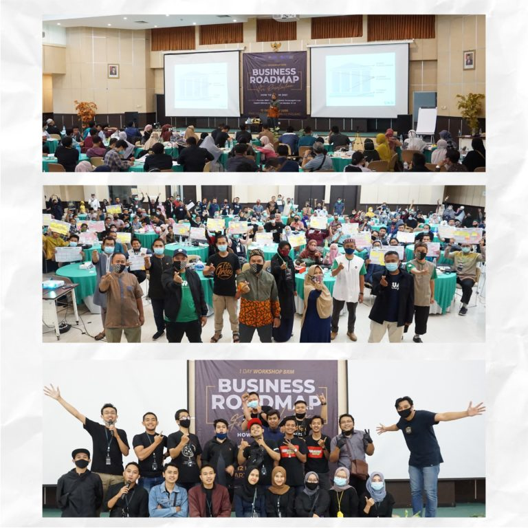
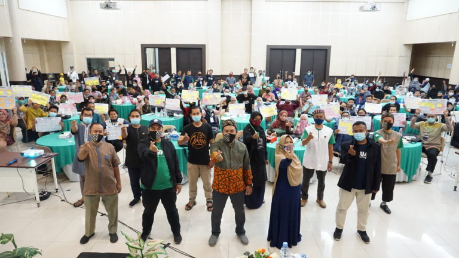
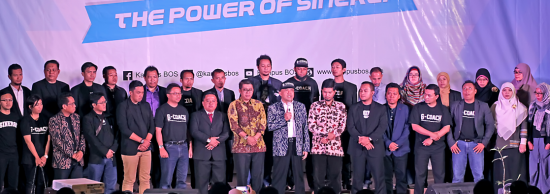

01
Training
Seminar, workshop, dan in-house training untuk memantik perubahan serta mengembangkan soft skill dan hard skill.
Tentang training
Sinergi Business Solution
Pendampingan yang membantu manusia, bisnis, dan organisasi bergerak menuju tujuan dengan lebih terarah.
Belajar, bertumbuh, berdampak.
Pendampingan yang berangkat dari kebutuhan nyata.

peserta seminar, workshop, training, dan coaching
mendampingi perjalanan tumbuh para klien
metode pendampingan yang saling melengkapi
Pengalaman lintas instansi, perusahaan, dan UMKM.
Our Clients
Tentang Sinergi
01 WHO WE ARESinergi Business Solution mengembangkan perusahaan, bisnis, entrepreneurship, leadership, dan potensi personal. Kami merangkai training, coaching, consulting, dan mentoring agar dukungan yang diberikan sesuai dengan tantangan dan tujuan setiap klien.
Kenali pendekatan kamiCara kami mendampingi
Dipilih dan dirangkai sesuai kebutuhan, agar setiap proses belajar menghasilkan langkah yang bisa dijalankan.
Seminar, workshop, dan in-house training untuk memantik perubahan serta mengembangkan soft skill dan hard skill.
Tentang trainingProses terarah untuk menyusun tujuan, membangun strategi, mengawal implementasi, dan meninjau hasil.
Tentang coachingSudut pandang dan solusi untuk tantangan manajemen, sistem bisnis, pengembangan SDM, dan model usaha.
Tentang consultingPendampingan menyeluruh untuk membantu klien menentukan prioritas, menyelesaikan proyek, dan bergerak maju.
Tentang mentoringDari insight ke hasil
Setiap proses dirancang untuk memberi ruang bagi pemahaman, praktik, dan tindak lanjut, supaya pertumbuhan tidak berhenti di ruang kelas.
Rancang pendampingan bersama kamiKenali konteks, tantangan, dan tujuan yang ingin dicapai.
Padukan metode pendampingan sesuai kebutuhan klien.
Ubah insight menjadi aksi yang terukur dan berkelanjutan.
Program pendampingan
Rangkaian program pengembangan bisnis dan komunitas yang membantu peserta bergerak dari ide menuju kemajuan.


Termasuk Business Class, Gathering Nasional, Focus Group Discussion, dan program pendampingan bisnis.
Jelajahi seluruh programSinergi Community
Komunitas ini menjadi ruang bagi alumni program untuk tetap terhubung, berbagi pengalaman, dan berkembang bersama. Aktivitasnya mencakup kelas bisnis, diskusi kelompok, pertemuan komunitas, dan pendampingan usaha.
Jelajahi komunitasTim Sinergi
Berdedikasi penuh memberikan pelayanan terbaik kepada klien dan stakeholder.

Founder
CEO EMAS Corp. dan Sinergi Business Solution; Founder Utsman Fondation dan Sukses Berkah Community.

Co-founder
Konsultan senior, lead auditor ISO 9001 dan ISO 45001, serta auditor SMK3 PP50 Tahun 2012.

Co-founder
Project Manager Sinergi Business Solution dan Lead of Sinergi Associate.

Co-founder
Founder Ochiz Salad dengan pengalaman di PT Bank Mandiri, service excellence, dan business development.
Belajar dalam aksi
Dokumentasi kegiatan training, coaching, consulting, seminar, dan workshop akan ditampilkan di galeri.
Kunjungi halaman galeriMulai percakapan